정보통신기사(구) (2003-05-25 기출문제)
1과목: 디지털 전자회로
1. 그림과 같은 회로의 입력으로 스텝 전압을 인가할때 출력전압 파형은? (단, A는 이상적인 연산 증폭기이다.)
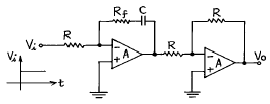
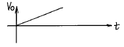
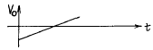
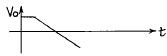
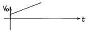
(정답률: 알수없음)

2. 그림의 회로에서 R1=150㏀, Rf=900㏀, V1=3V일 때, 출력전압 Vo는?
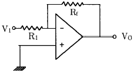
- -12〔V〕
- -15〔V〕
- -18〔V〕
- -20〔V〕
(정답률: 알수없음)
3. 다음과 같은 DCTL 논리회로의 게이트 기능은?
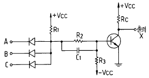
- NOR
- NOT
- NAND
- AND
(정답률: 알수없음)
4. 어떤 논리회로에서 입력은 A, B, C 이며 출력은 입력 중에서 둘이상이 1일 때 출력 Y가 1이 된다면 이 논리회로의 논리식은?
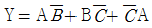
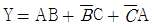
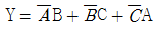
- Y = AB+BC+CA
(정답률: 알수없음)
5. 다음 회로의 출력전압을 구하면?
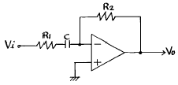
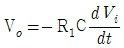
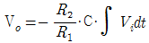
- Vo = -jWCR2Vi/(1+jWCR1)
- Vo = -jWCR1Vi/(1+jWCR2)
(정답률: 알수없음)
6. 14핀 TTL IC에서 2개의 단자는 +전원과 접지로 사용된다. 그러면 이 14핀 IC에 넣을 수 있는 인버터의 개수는 최대 몇 개인가?
- 3 개
- 4 개
- 5 개
- 6 개
(정답률: 알수없음)
7. 변조도 40[%]의 진폭변조에서 반송파의 평균전력이 300[mW]일 때 피변조파의 평균전력은 약 얼마인가?
- 100[mW]
- 300[mW]
- 324[mW]
- 424[mW]
(정답률: 알수없음)
8. 그림에서의 전달 함수
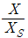
는?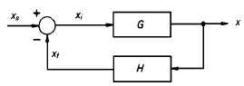
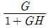
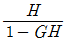
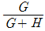
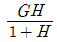
(정답률: 알수없음)
9. 다이오드 검파에서 얻은 AGC 전압의 크기는 무엇에 따라 커지는가?
- 반송파 주파수
- 반송파 전압
- 피변조파의 변조도
- 변조파의 주파수
(정답률: 알수없음)
10. 연산증폭기를 사용한 아날로그 계산기에서 미분기 대신 적분기를 사용하는 가장 큰 이유는?
- 적분기의 회로가 간단하다.
- 적분기는 비선형이다.
- 적분기의 계산속도가 빠르다.
- 적분기는 잡음특성이 좋다.
(정답률: 알수없음)
11. 프리엠퍼시스(pre-emphasis)회로는 어느 회로와 같은가?
- 저역통과필터
- 고역통과필터
- 대역통과필터
- 대역저지필터
(정답률: 알수없음)
12. 연산증폭기의 이상 조건을 설명한 것이 아닌 것은?
- 입력 임피던스가 크고 여기에 흐르는 전류는 입력 전류에 비해 무시될수 있어야 한다.
- 부하변동이 OP-Amp의 특성에 영향을 주지 않을 정도로 출력임피던스 값이 작아야 한다.
- 응답시간의 벗어남이 전혀 없어야 한다.
- 입력전압은 출력전압에 비하여 충분히 커야 한다.
(정답률: 알수없음)
13. 다음 회로에서 다이오드 D1과 D2가 동시에 차단상태로 되는 조건으로 옳은 것은? (단, V2 > V1이다.)
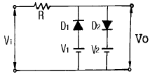
- Vi ≤ V1
- V1 ＞ Vi ＞ V2
- V1 ＜ Vi ＜ V2
- Vi ≥ V2
(정답률: 알수없음)
14. 그레이 코드(Gray Code) 1111을 2진수로 변환한 값은?
- 1110
- 1010
- 1011
- 1111
(정답률: 알수없음)
15. 아래의 그림과 같은 전압분할 바이어스의 CE 증폭기에서 동작점에서의 전류 ICQ와 C-E간 전압 VCEQ의 값을 구하면? (단, 트랜지스터의 VBE(ON) = 0.7 [V], IC = IE로 간주한다.)
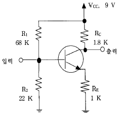
- ICQ = 1.0 [mA], VCEQ = 4.5 [V]
- ICQ = 1.5 [mA], VCEQ = 4.8 [V]
- ICQ = 1.8 [mA], VCEQ = 4.2 [V]
- ICQ = 2.0 [mA], VCEQ = 5.0 [V]
(정답률: 알수없음)
16. 입력 임피던스를 높이기 위한 회로방식에 해당하지 않는 것은?
- 부우트스트랩(bootstrap)접속
- 다아링톤(darlington)접속
- CC(컬렉터접지)접속
- 캐스코오드(cascode)접속
(정답률: 알수없음)
17. 아래 그림의 설명 중 가장 적합한 내용은?
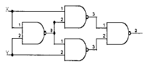
- JK플립플롭이다.
- T형플립플롭이다.
- Exclusive-OR 게이트이다.
- 가산기이다.
(정답률: 알수없음)
18. 다음의 Karnaugh도로 주어진 함수를 최소의 곱의 합함수로 만든 것은?
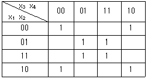
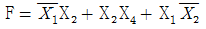
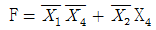
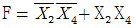
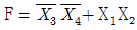
(정답률: 알수없음)
19. 스위칭 정전압 제어기에서 제어 트랜지스터가 도통되는 시간은?
- 입력전압이 정해진 제한을 넘어설 때만
- 항상
- 과부하가 걸렸을 때만
- 일정부분의 시간에서만
(정답률: 알수없음)
20. 다음 연산증폭회로에서 출력전압 Vo는?
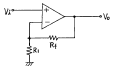
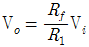
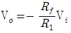
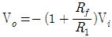
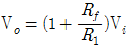
(정답률: 알수없음)
2과목: 정보통신 시스템
21. 데이터 전송에 융통성이 있고 메세지가 짧은 경우에 가장 유리한 교환방식은?
- 회선 교환방식
- 데이터그램 패킷 교환방식
- 메시지 교환방식
- 가상회선 교환방식
(정답률: 알수없음)
22. 다음 프로토콜 중 OSI 7계층의 어플리케이션 계층에 해당하지 않은 것은?
- MHS
- BSC
- Virtual Terminal
- FTAM
(정답률: 알수없음)
23. 다음 중 ITU-T X.25에 대한 설명 중 틀린 것은?
- X.25는 OSI 참조모델의 하위 3계층과 일치하는 3개계층으로 되어있다.
- X.25는 DCE간 네트워크 내부접속에 대한 사항은 규정하지 않는다.
- X.25를 적용한 패킷교환망 내부의 통신절차는 동일하다.
- X.25에 의해 DTE가 패킷교환망으로 부터 제공하는 패킷교환서비스는 동일하다.
(정답률: 알수없음)
24. 데이타 통신은 정확한 데이타를 가장 경제적인 시스템을 통하여 가장 빠른 속도로 전송하는 것을 목표로 한다. 이러한 통신 시스템의 효율에 가장 영향이 적은 것은?
- 회선의 특성
- 코딩방식
- 단말기의 기억용량
- 송.수신 속도
(정답률: 알수없음)
25. ADSL선로에 적용되는 변조 방식으로서, 데이터 열을 다중 데이터 블록으로 나눈 후 각 데이터 블록들을 서로 다른 부반송파에 실어 전송하는 방식은?
- DMT
- CAP
- 2B1Q
- RAM
(정답률: 알수없음)
26. 정보통신의 특징으로 바르지 않는 것은?
- 고속전송 및 광대역전송이 가능하다.
- 근거리에 한정된 고품질의 통신을 한다.
- 에러제어로서 신뢰성이 높다.
- 경제성이 높고 응용범위가 넓다.
(정답률: 알수없음)
27. 순환잉여도검사(Cyclic Redundancy Check)방식의 에러검사 방식을 설명한 것이 아닌 것은?
- 문자단위의 전송에서 응용하기 적당하다.
- 패리티 검사코드의 일종인 순환코드를 이용한다.
- 단일 비트에러는 100[%]추출할 수 있다.
- CRC-16은 X16+X15+X2+1의 다항식을 이용한다.
(정답률: 알수없음)
28. 디지탈 계위구성(hierarchy) 방법으로 맞는 방식은?
- 북미방식의 24ch, 1.544[Mbit/s]를 기준
- 북미방식의 30ch, 2.048[Mbit/s]를 기준
- 유럽방식의 24ch, 2.048[Mbit/s]를 기준
- 유럽방식의 30ch, 1.544[Mbit/s]를 기준
(정답률: 알수없음)
29. PCM 전송시스템의 수신측에서 본 아이(EYE) 패턴으로 알 수 있는 것은?
- 정확한 에러율
- 전송로상의 파형 찌그러짐과 잡음 정도
- 양자화 잡음
- 변조방식
(정답률: 알수없음)
30. 계층간의 통신에 대한 모델에서 네트워크의 다른 지역에 있는 대등 실체에게 보내지는 정보로 그 실체에게 어떤 서비스 기능을 수행하도록 지시하는 것으로 프로토콜 제어 정보를 의미하는 것은?
- SDU
- IDU
- PCI
- ICI
(정답률: 알수없음)
31. 지능망 구성 요소 중 SCP와 SSP사이의 정보를 전달하는데 사용되는 프로토콜은 어떤 것인가?
- No.7 공통선 신호방식
- X.25
- TCP
- R.2
(정답률: 알수없음)
32. 통신프로토콜을 전송할 데이터 프레임의 구성에 따라 비트방식, 바이트방식, 문자방식으로 나눌 때 다음 중 비트방식에 해당하지 않는 것은?
- BSC
- HDLC
- LAP-B
- X.25
(정답률: 알수없음)
33. PCM 24CH 방식의 표본화에 있어서 1프레임(frame)시간 즉, 각 CH를 일순하는 시간은? (단, 표본화 주파수는 8[KHz]로 한다.)
- 24[μ s]
- 80[μ s]
- 100[μ s]
- 125[μ s]
(정답률: 알수없음)
34. 다음 정보전송용 다중화장비에 대한 설명 중 틀린 것은?
- 주파수분할 다중화기는 구조가 간단하고 비동기식 데이터를 다중화하는데 주로 사용된다.
- 시분할 다중화기는 각 부채널을 차례로 스캐닝하여 실제 전송할 데이터가 없는 부채널에도 시간폭이 배정 된다.
- 주파수분할 다중화기는 주파수 대역간의 혼신을 방지하기 위하여 보호대역을 사용하므로 주파수 대역의 낭비를 초래 할 수 있다.
- 시분할 다중화기는 비트삽입식과 문자삽입식이 있으며 비트삽입식은 비동기식 데이터를, 문자삽입식은 동기식 데이터를 다중화하는데 이용된다.
(정답률: 알수없음)
35. 근거리망(LAN) 설계시 고려해야 할 기술적 특성 중 거리가 먼 것은?
- 전송매체
- 경로 제어방법
- 토폴로지
- 액세스 제어방법
(정답률: 알수없음)
36. 데이타를 전송하는데 사용하는 구조화 기법의 구성형태에서 교환통신망에 해당되지 않는 것은?
- 회선 교환망
- 패킷 교환망
- 패킷 라디오망
- 메세지 교환망
(정답률: 알수없음)
37. 통신서비스 구현에 사용되는 교환방법 중 동기식 트래픽 전송에 가장 적합한 방법은?
- 패킷교환
- 회선교환
- 메세지교환
- 데이터그램
(정답률: 알수없음)
38. 통신 전송의 세 가지 기본 방식으로 옳은 것은?
- 단방향 통신, 양방향 통신, 전이중 통신
- 단방향 통신, 반이중 통신, 전이중 통신
- 양방향 통신, 반이중 통신, 전이중 통신
- 단방향 통신, 이중 통신, 혼합 통신
(정답률: 알수없음)
39. 다음 그림은 화상회의 시스템의 구성도이다. A에 들어갈 장치는?
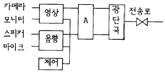
- 모뎀
- DSU
- SCANNER
- CODEC
(정답률: 알수없음)
40. 인공위성망(Satellite Network)의 설명으로 틀린 것은?
- 인공위성을 중계기로 하여 수신이 어려운 지역에도 통신이 가능하다.
- 위성회선은 전송지연이 작기 때문에 재전송이나 데이터의 전송이 빠르다.
- 광역의 대량 서비스가 가능하다.
- 전송채널을 미리 확보해야 하며, 가능한 재전송이 없도록 해야한다.
(정답률: 알수없음)
3과목: 정보통신 기기
41. 디지털 전송방식 중 유럽방식(CEPT)의 특징이 아닌 것은?
- 전송 기본 속도는 64Kbps 이다.
- 프레임 당 비트수는 256개이다.
- 전송 비트율은 2048Kbps이다.
- 압신방식(companding)은 u-Law이다.
(정답률: 알수없음)
42. 다음중 교환기의 가입자선 정합부의 기능이 아닌 것은?
- Battery feed
- Office signaling
- Ringing
- Testing
(정답률: 알수없음)
43. 다음중 자기디스크에서 데이터를 읽고 쓰기작업을 하는 경우에 가장 시간이 많이 소요되는 작업은?
- 디스크선택
- 실린더선택
- 트랙선택
- 섹터선택
(정답률: 알수없음)
44. 다음중 텔레텍스트의 설명으로 틀린 것은?
- 통상의 TV 방송과 함께 문자 또는 도형형태의 정보를 제공한다.
- 문서작성과 편집기능을 갖는다.
- 수신기에 기록장치를 부착하면 프린트가 가능하다.
- 다양하고 값싼 정보를 즉각적으로 선택하여 상품구입, 예약 등을 할 수 있다.
(정답률: 알수없음)
45. ISDN 가입자는 여러개의 단말기로 동시에 통화를 할 수 있다. 다음 중 ISDN 채널 다중화에 응용되면서 원거리 통신에 적합한 기술은?
- 시분할 다중화 기술
- 주파수 다중화 기술
- 통계적 다중화 기술
- 비동기식 다중화 기술
(정답률: 알수없음)
46. 다음은 정보전송용 다중화 장치와 집중화장치에 대한 설명이다. 옳지 않은 것은?
- 다중화 장비는 전송로의 정적인 공동이용을 행하나 집중화 장비는 동적인 공동이용을 행한다.
- 집중화 장치는 여러 개의 입력회선을 보다 많은 출력회선으로 집중화가 가능하나, 데이터의 압축이 되지 않는다.
- 다중화 장비는 두 개 또는 그 이상의 신호를 결합하여 물리적 회선이나 무선링크를 통해 전송해주는 장치이다.
- 지능다중화 장비는 실제 집중화장비의 역할을 하며, 비동기식 다중화장비라고도 한다.
(정답률: 알수없음)
47. 위성통신 중계기의 TWTA, RF 출력전력이 80W 동작에 필요한 DC 입력전력이 100W라고 할 때 효율은 몇 %인가?
- 120
- 110
- 100
- 80
(정답률: 알수없음)
48. 지능(intelligent) 다중화기에 대해서 잘못 설명한 것은?
- 비교적 전송효율은 낮은 편이다.
- 실제 전송 데이터가 있는 터미널에만 시간폭을 할당한다.
- 통계적 시분할 다중화기라고도 한다.
- 동적인 시간폭의 배정이 가능한 방식이다.
(정답률: 알수없음)
49. 공통선 신호방식인 No.7 신호방식의 수용 가능한 교환기가 아닌 것은?
- 5ESS
- S1240
- M10CN
- TDX-10
(정답률: 알수없음)
50. AM송신기의 구성에서 완충증폭기의 위치가 적합한 곳은?
- 발진부와 체배부 사이
- 체배부와 증폭부 사이
- 증폭부와 변조부 앞
- 여진증폭부 다음
(정답률: 알수없음)
51. 비디오 텍스의 알파 모자이크 방식의 도형 소편 종류에 해당 되지 않는 것은?
- 블록 소편
- 점 소편
- 평활화 소편
- 선 소편
(정답률: 알수없음)
52. 회선을 보유하거나 임차하여 정보의 축적, 가공, 변환하여 광범위한 서비스를 제공하는 것은?
- LAN
- VAN
- CATV
- ISDN
(정답률: 알수없음)
53. 위성통신에서 10GHz 이상의 주파수에서 비교적 적게 발생하는 감쇠현상은?
- 대기가스에 의한 흡수감쇠
- 강우감쇠
- 전리층 신틸레이션에 의한 감쇠
- 대기 굴절률에 의한 감쇠
(정답률: 알수없음)
54. 다원 접속방식의 설명으로 잘못된 것은?
- 주파수분할다원접속은 광대역의 중계기대역을 분할하여 각대역폭을 지구국에 할당한다.
- 부호분할다원접속은 대역확산의 개념으로 복수개의 지구국이 위성중계기를 공유한다.
- 공간분할다원접속은 위성안테나의 설비구성이 간단하고, 중계기의 구조가 간단하다.
- 시분할다원접속은 시간을 분할하여 프레임내의 특정 위치를 각 지구국에 할당한다.
(정답률: 알수없음)
55. 전자교환기의 교환처리상 입력처리 프로그램의 주요기능이 아닌 것은?
- 가입자선, 중계선의 검출
- 선택숫자의 수신, 메모리의 축적 자리수의 결정
- 타임 아웃의 검출
- 상태분석 및 실행
(정답률: 알수없음)
56. 단말기의 기능을 구분한 것중 입출력 기능에 해당되는 것은?
- 입출력 제어 기능
- 오류제어 기능
- 출력 변환 기능
- 송수신 제어장치
(정답률: 알수없음)
57. 변복조기(Modem)의 고려사항과 관계가 적은 것은?
- 변조방식
- 동기방법
- 샘플링방식
- 등화회로
(정답률: 알수없음)
58. 다음중 컴퓨터시스템에서 입력장치로 사용되는 OCR장치의 종류에 해당되지 않는 것은?
- 도큐멘트 리더
- 저널 리더
- 페이지 리더
- 카드 리더
(정답률: 알수없음)
59. 다음중 CCTV의 설치와 관계가 먼 것은?
- CCTV를 아파트에서 난시청해소용으로 설치하였다.
- CCTV를 지하철에 설치하였다.
- CCTV를 은행금고에 설치하였다.
- CCTV를 범죄발생률이 높은 지역에 설치하였다.
(정답률: 알수없음)
60. 지구상공에서 300∼1500Km까지 유용하게 사용할 수 있고, 위성과 이동국(단말기)의 송신전력을 절감할 수 있으며, 또한 전파지연 시간이 적어 음성통신에 유리한 인공위성은?
- 저궤도 위성(LEO)
- 중궤도 위성(MEO)
- 고궤도 위성(HEO)
- 정지궤도 위성(GEO)
(정답률: 알수없음)
4과목: 정보전송 공학
61. 비동기식 전송 방식의 특징이 아닌 것은?
- 각 문자 사이에 일정치 않은 휴지 기간이 있을 수 있다.
- 저속 전송에 주로 이용된다.
- 동기가 문자 단위로 이루어 진다.
- 동기를 위한 클럭을 전송해야 한다.
(정답률: 알수없음)
62. 광섬유의 광손실중 외부의 힘에 의한 손실은?
- 매크로 밴딩(macro banding) 손실
- 마이크로 밴딩(micro banding) 손실
- 나노 밴딩(nano banding) 손실
- 피코 밴딩(pico banding) 손실
(정답률: 알수없음)
63. 0,1로 나타내는 신호의 신호간격이 2 [msec] 일때 데이터 신호 속도[kbit/sec]는 얼마인가?
- 0.5
- 1
- 2
- 4
(정답률: 알수없음)
64. 다음의 변조기법에서 원천코딩(source coding)과 관계가 없는 것은?
- 차동 PCM
- 적응 PCM
- 비선형 코딩
- 선형 예측코딩
(정답률: 알수없음)
65. 베이스 밴드(base band) 전송에서 전송 신호의 상태가 3종류로 나타나는 방식은?
- RZ 스페이스 방식
- 바이페이즈(biphase) 방식
- 바이폴라(bipolar) 방식
- 복류 NRZ 방식
(정답률: 알수없음)
66. PCM시스템 에서는 ISI(Inter Symbol Interference)를 측정하기 위해 눈패턴(eye pattern)을 이용한다. 눈패턴에서 눈을 뜬 상하의 높이는 무엇을 의미하는가?
- 잡음에 대한 여유도
- 시스템 감도
- 시간오차에 대한 민감도
- 최적의 샘플링 순간
(정답률: 알수없음)
67. 델타 변조방식에서는 표본화 순간에 직전 표본 신호에 비하여 +, 또는 -변화만을 부호화 한다. 이때 표본화 주파수는 Nyquist 표본화 주파수보다 10배 이상 빨라야 하나 그렇지 못한 경우 입력 신호가 급격하게 변하면 잡음이 발생한다. 이에 해당하는 잡음은?
- 프레임 잡음(Frame noise)
- 과부하 잡음(Overload noise)
- 열 잡음(Thermal noise)
- 지연의곡(Dalay distortion)
(정답률: 알수없음)
68. 어느 특정 시간동안 전송된 비트수가 1,000개의 비트수가 전송되고 이 1,000개의 비트중 5개가 오류로 판명되었을 때 이 전송의 비트 에러율은 얼마인가?
- 0.5%
- 5%
- 50.5%
- 99.5%
(정답률: 알수없음)
69. 광통신시스템 특유의 잡음은?
- 열 잡음
- 혼신 잡음
- 모드 분산 잡음
- 양자화 잡음
(정답률: 알수없음)
70. 데이터 전송의 3가지 방식에 해당하지 않는 것은?
- 표준 응답 방식
- 비동기 응답 방식
- 비동기 평형 방식
- 표준 폴링 방식
(정답률: 알수없음)
71. 반송파의 진폭을 디지털신호에 의해 변화시키는 변조방식은?
- FSK
- ASK
- PCM
- PSK
(정답률: 알수없음)
72. 음성신호를 디지털 신호로 변환하기 위해 6비트 A/D 변환기를 이용하였다. 만약 8비트 A/D변환기를 이용하게 되면 6비트 A/D 변환기를 사용했을 때에 비해 SNR은 어떻게 변화되는가?
- 6비트 A/D 변환기를 사용했을 때에 비해 3dB 증가
- 6비트 A/D 변환기를 사용했을 때에 비해 6dB 증가
- 6비트 A/D 변환기를 사용했을 때에 비해 9dB 증가
- 6비트 A/D 변환기를 사용했을 때에 비해 12dB 증가
(정답률: 알수없음)
73. ITU-T에서 데이터통신의 표준코드로 선정한 ASCII의 구성을 살펴보면 제어문자와 도형문자로 구성되는데 제어문자는 크게 4가지로 분류된다. 그중 전송제어의 설명으로 맞는 것은?
- 프린트용지나 단말장치의 스크린상에서 정보의 물리적인 구조를 제어하기위하여 사용한다.
- 정보 데이터를 4가지 요소로 분리하기위해 사용한다.
- 단말 장치에서 주변의 보조 장치를 제어하기 위해 사용한다.
- 데이터 통신 회선상에서 데이터의 흐름을 제어하기 위하여 사용한다.
(정답률: 알수없음)
74. 파장이 서로 다른 여러 광신호를 광결합기를 통하여 전송하고 수신측에서 광분파기로 분리하는 다중화 방식은?
- WDM
- FDM
- TDM
- SDM
(정답률: 알수없음)
75. BASIC 프로토콜에서 사용되는 전송제어문자중 헤딩(heading)의 종료 및 텍스트(text)의 개시를 나타내는 것은?
- SOH
- STX
- ENQ
- DLE
(정답률: 알수없음)
76. 광섬유 케이블이 특히 광대역 통신망에 적합한 이유는?
- 주파수가 마이크로파 보다 수만배 높다.
- 전송손실이 극히 적다.
- 전자파나 라디오파의 유도장애를 받지 않는다.
- 가볍고 취급이 용이하다.
(정답률: 알수없음)
77. 광케이블의 종류별 구조에 따른 설명으로 잘못된 것은?
- 계단형 굴절율 광섬유는 균일한 굴절율의 core와 이를 둘러싼 약간 작은 굴절율의 cladding 으로 되어 있다.
- 단일 물질 광섬유는 core의 주위에 공기와 얇은판으로 되어 있어 계단형 굴절율 광섬유와 모양만 다르다.
- W형 굴절율 광섬유는 단일모드 광섬유로서 제조시core를 크게 만들 수 있다.
- 언덕형 굴절율 광섬유는 섬유 중심부에서 core 와 cladding 경계면 쪽으로 굴절율의 분포가 증가하도록 되어 있다.
(정답률: 알수없음)
78. 다음중 델타(delta)변조 방식과 관계가 없는 것은?
- 전송정보는 디지탈 형태를 갖는다.
- 표본화 순간의 값을 바로 직전의 표본화 순간의 값과 비교한다.
- 소규모 회선에서 보다 경제성이 있다.
- FM 변조방식의 일종이다.
(정답률: 알수없음)
79. 디지탈 전송 과정에서 발생한 수신착오(error)를 교정하기 위하여 사용하는 것과 관계 적은 것은?
- 해밍코드(Hamming code)
- 그레이 코드(Gray code)
- 콘볼류션 코드(Convolutional code)
- 순환 코드(Cyclic code)
(정답률: 알수없음)
80. 통신로용량(channel capacity)에 관한 것 중 틀린 것은?
- 데이터 신호속도와 같은 단위를 갖는다.
- 통신한 시간에 비례한다.
- 대역폭에 비례한다.
- 수신기에서의 신호대 잡음비가 높을수록 증대된다.
(정답률: 알수없음)
5과목: 전자계산기일반 및 정보통신설비기준
81. 정보통신부장관은 자가전기통신설비를 설치한 자가 전기통신기본법에 의한 시정명령을 이행하지 아니한 경우에는 몇 년이내의 기간을 정하여 그 사용의 정지를 명할 수 있는가?
- 1년
- 2년
- 3년
- 4년
(정답률: 알수없음)
82. 전기통신회선에서 신호나 잡음의 절대레벨을 표현할 때 사용되는 dB단위는?
- dBr
- dBrn
- dBa
- dBm
(정답률: 알수없음)
83. 주기억 장치를 구성할 때 한 기억 장치 모듈 내의 연속적인 기억 장치 소자들에 연속적으로 주소를 붙이지 않고 일정한 수의 배수 만큼 거리를 두고 배정하는 방법은?
- 인터리빙
- 복수 모듈
- 멀티 플렉서
- 셀렉터
(정답률: 알수없음)
84. 데이터 전송기준의 측정 척도중 오율의 측정기준이 아닌것은?
- 비트 오율
- 블록 오율
- 전신 왜율
- 트래픽 오율
(정답률: 알수없음)
85. 부동 소수점 수의 표현 구조로 적합한 것은?
- 부호 + 지수 + 소수점
- 부호 + 가수 + 소수점
- 부호 + 지수 + 가수
- 부호 + 지수 + 소수점 + 가수
(정답률: 알수없음)
86. 다음 중 전자계산기 하드웨어의 주요구성요소가 아닌것은?
- 출력장치
- 중앙처리장치
- A/D 변환장치
- 보조기억장치
(정답률: 알수없음)
87. 다음 중 컴퓨터 운영체제에 속하지 않는 것은?
- WINDOWS 2000
- WINDOWS NT
- UNIX
- PDP 11
(정답률: 알수없음)
88. 주소지정방식 중 기억장치에 최소 두번 접근해야 오퍼 랜드를 얻을 수 있는 것은?
- 직접주소지정방식
- 간접주소지정방식
- 상대주소지정방식
- 실제값주소지정방식
(정답률: 알수없음)
89. 비상시의 통신 확보에 관한 설명 중 맞지 않는 것은?
- 국가비상사태가 발생한 경우 자가통신설비 설치자에게도 전기통신업무를 취급하게 할 수 있다.
- 국가비상사태가 발생할 우려가 있는 경우 자가통신설비를 다른 전기통신설비와 접속하게 할 수 있다.
- 자가통신설비와 다른 설비의 접속을 명한 때 소요된 설비는 전기통신사업자가 부담한다.
- 정보통신부장관은 기간통신사업자로 하여금 비상시에 통신확보 업무를 취급하게 할 수 있다.
(정답률: 알수없음)
90. DMA에 의한 입출력에 관한 설명중 옳은 것은?
- 소형 마이크로프로세서에만 가능하다.
- 중앙처리장치와 관계없이 자료를 직접 기억장치에 입출력한다.
- 일반적으로 속도가 느린 입출력장치에 대하여 사용된다.
- DMA 입출력을 수행할 때는 중앙처리장치는 다른 일을 수행할 수 없다.
(정답률: 알수없음)
91. 정보통신공사업법령에서 규정하는 정보통신기술자 중 특급기술자에 해당되지 아니하는 자는?
- 기술사
- 기사자격을 취득한 후 8년 이상 공사업무를 수행한자
- 산업기사자격을 취득한 후 11년 이상 공사업무를 수행한 자
- 박사학위자
(정답률: 알수없음)
92. 전기통신의 효율적인 관리를 위한 전기통신 정책수행에 관한 필수사항을 규정한 법은?
- 전기통신사업법
- 정보화촉진기본법
- 정보통신공사업법
- 전기통신기본법
(정답률: 알수없음)
93. 정보통신부장관이 전기통신의 원활한 발전과 정보화 사회의 촉진을 위하여 수립,공고하는 전기통신기본 계획에 포함되는 사항과 거리가 먼 것은?
- 전기통신의 이용효율화에 관한 사항
- 전기통신의 질서유지에 관한 사항
- 유선방송사업에 관한 사항
- 전기통신설비에 관한 사항
(정답률: 알수없음)
94. 전자 계산기 시스템에서 보수(complement)를 사용하는 이유는?
- 감산에서 보수 가산 방법으로 처리하기 위해
- 불필요한 제산과 감산 과정을 제외시키기 위해
- 승산 연산 과정을 간단화하기 위해
- 정확한 가산 결과를 얻기 위해
(정답률: 알수없음)
95. 정보통신공사업자가 아닌 자도 시공할 수 있는 공사는?
- 실험국의 무선설비 설치
- 유선방송시설 중 선로설비 설치
- 폐쇄회로 텔레비젼 설비 설치
- 레이다 설비 설치
(정답률: 알수없음)
96. 병렬컴퓨터의 분류에서, 여러 개의 프로세서가 하나의 제어장치로부터 단일 명령어를 받지만, 처리되는 데이터는 서로 다른 프로세서에서 이루어지는 구조는?
- SIMD
- SISD
- MISD
- MIMD
(정답률: 알수없음)
97. 비트오율의 정의는?
- 수신된 비트의 수에 대한 잘못 수신된 비트의 수의 비율을 말한다.
- 송신한 비트의 수에 대한 잘못 수신된 비트의 수의 비율을 말한다.
- 송신한 비트의 수와 수신된 비트의 수를 합한 비트의 수에 대한 수신된 비트의 수의 비율을 말한다.
- 송신한 비트의 수와 수신된 비트의 수의 차이다.
(정답률: 알수없음)
98. (-9)10를 부호화된 2의 보수(signed -2'S complement)로 표시하면?
- 0001001
- 1001001
- 1110111
- 1110110
(정답률: 알수없음)
99. 한국정보통신기술협회에 관한 다음 설명 중 틀린 것은?
- 협회는 법인으로 한다.
- 정보통신부장관 소속하에 둔다.
- 협회장은 정보통신부차관이 된다.
- 전기통신의 표준화업무를 추진한다.
(정답률: 알수없음)
100. 어셈블리어 명령과 거리가 먼 것은?
- 라벨
- 어드레스
- 니모닉
- 오퍼랜드
(정답률: 알수없음)